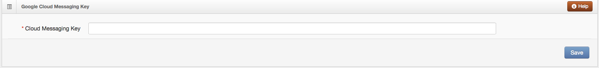
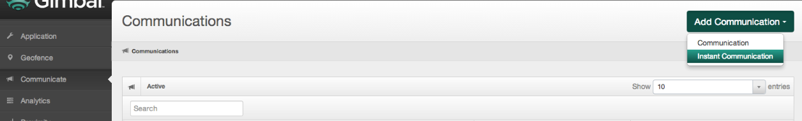
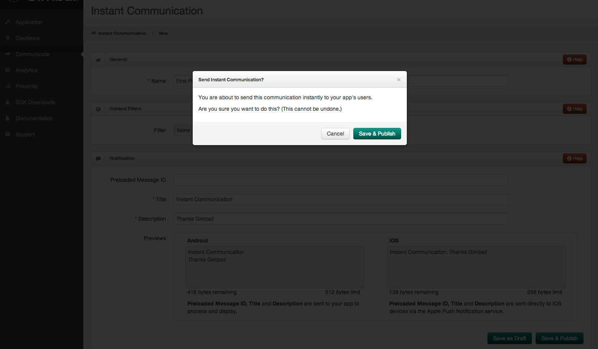
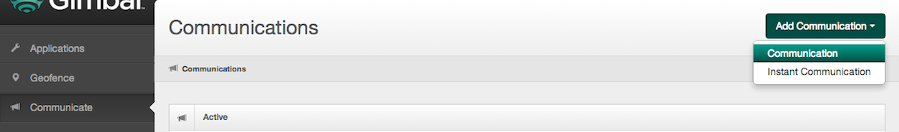

The version 2 API offers a number of enhancements and features that simplifies the use of the SDK. This documentation provides a quickstart example on how to create a gimbal sdk enabled application along with a guide for the available API.
Places Version 2 API introduces the concept of places. A Place can be represented by a single geofence and/or a series of beacons. Thus, when you create a Place in Gimbal Manager you can draw a geofence and/or choose a set of beacons to define the Place. As a developer, you would add Communications or other triggers to occur on a Place Entry or Exit.
The following steps will set up an application in Eclipse using commonly used Gimbal SDK features.
In Eclipse choose File > New > Project and search for "Android Application Project".
Fill out your "Application Name", "Project Name", and "Package Name" fields.
Important The "Minimum Required SDK" should be set to API 14, "Target SDK" and "Compile With" fields should be set to API 21. Then click through the rest of the "New Android Application" setup wizard.
Note You will find these jars in the gimbal-sampleapp/libs folder inside the Gimbal SDK zip file.
Add jars to your Android application by copy and pasting them into the libs folder of your android project.
Your project should now look similar to this. You may need to select 'File' then 'Refresh' in Eclipse to see the added jar files.
Create Your Gimbal Application in the Gimbal Manager.
You will be presented with a form where you will select the Android platform and enter a package name. Enter the package name you set in your Eclipse New Application.
Hit the 'Generate' button. Once finished, your app will have a Gimbal API Key.
Important You'll need your Gimbal API Key to run your Android app.
Add this code to the top of your MainActivity source file.
import com.gimbal.android.Gimbal;
Add this code to your onCreate(Bundle savedInstanceState) method, inserting your specific Gimbal API Key.
Gimbal.setApiKey(this.getApplication(), "## PLACE YOUR API KEY HERE ##");
Import the following classes.
import com.gimbal.android.PlaceManager;
import com.gimbal.android.PlaceEventListener;
import com.gimbal.android.Place;
import com.gimbal.android.Visit;
Set an instance variable to hold your PlaceEventListener object
private PlaceEventListener placeEventListener;
Create and implement the PlaceEventListener interface. Add the PlaceEventListener to the PlaceManager instance. This will allow your app to receive place enter and exit events.
For example, you can add the following code in onCreate(Bundle savedInstanceState) method.
placeEventListener = new PlaceEventListener() {
@Override
public void onVisitStart(Visit visit) {
// This will be invoked when a place is entered. Example below shows a simple log upon enter
Log.i("Info:", "Enter: " + visit.getPlace().getName() + ", at: " + new Date(visit.getArrivalTimeInMillis()));
}
@Override
public void onVisitEnd(Visit visit) {
// This will be invoked when a place is exited. Example below shows a simple log upon exit
Log.i("Info:", "Exit: " + visit.getPlace().getName() + ", at: " + new Date(visit.getDepartureTimeInMillis()));
}
};
PlaceManager.getInstance().addListener(placeEventListener);
Import the following classes.
import com.gimbal.android.CommunicationManager;
import com.gimbal.android.CommunicationListener;
import com.gimbal.android.Communication;
Set an instance variable to hold your CommunicationListener object
private CommunicationListener communicationListener;
Create and implement the CommunicationListener interface. Add the CommunicationListener to the CommunicationManager instance. This will allow your app to receive communications associated with the place enter and exit events.
For example, you can add the following code in onCreate(Bundle savedInstanceState) method.
communicationListener = new CommunicationListener() {
@Override
public Collection<Communication> presentNotificationForCommunications(Collection<Communication> communications, Visit visit) {
for (Communication comm : communications) {
Log.i("INFO", "Place Communication: " + visit.getPlace().getName() + ", message: " + comm.getTitle());
}
//allow Gimbal to show the notification for all communications
return communications;
}
@Override
public Collection<Communication> presentNotificationForCommunications(Collection<Communication> communications, Push push) {
for (Communication comm : communications) {
Log.i("INFO", "Received a Push Communication with message: " + comm.getTitle());
}
//allow Gimbal to show the notification for all communications
return communications;
}
@Override
public void onNotificationClicked(List communications) {
Log.i("INFO", "Notification was clicked on");
}
};
CommunicationManager.getInstance().addListener(communicationListener);
Note Place monitoring and beacon monitoring works independently of each other. For example, beacon monitoring is not required to get place events.
Import the following classes.
import com.gimbal.android.BeaconEventListener;
import com.gimbal.android.BeaconManager;
import com.gimbal.android.BeaconSighting;
Set an instance variable to hold your BeaconEventListener object
private BeaconEventListener beaconSightingListener;
private BeaconManager beaconManager;
Create and implement the BeaconEventListener interface. Add the BeaconEventListener to the BeaconManager instance. This will allow your app to receive sightings associated with your beacons.
For example, you can add the following code in onCreate(Bundle savedInstanceState) method.
beaconSightingListener = new BeaconEventListener() {
@Override
public void onBeaconSighting(BeaconSighting sighting) {
Log.i("INFO", sighting.toString());
}
};
beaconManager = new BeaconManager();
beaconManager.addListener(beaconSightingListener);
Add this code after the implementations for Listener interfaces above. This will start the service to allow for place monitoring and beacon monitoring.
PlaceManager.getInstance().startMonitoring();
beaconManager.startListening();
To allow Gimbal Services to function, you need to add a few elements to your AndroidManifest.xml file.
<uses-permission android:name="android.permission.INTERNET" />
<uses-permission android:name="android.permission.ACCESS_FINE_LOCATION" />
<uses-permission android:name="android.permission.ACCESS_WIFI_STATE" />
<uses-permission android:name="android.permission.WAKE_LOCK" />
<uses-permission android:name="android.permission.ACCESS_NETWORK_STATE" />
<uses-permission android:name="android.permission.RECEIVE_BOOT_COMPLETED" />
<uses-permission android:name="android.permission.BLUETOOTH" />
<uses-permission android:name="android.permission.BLUETOOTH_ADMIN" />
Places As stated earlier, v2 introduces the concept of places. A Place can be represented by a single geofence and/or a series of beacons. Thus, when you create a Place in Gimbal Manager you can draw a geofence and/or choose a set of beacons to define the Place. As a developer, you would add Communications or other triggers to occur on a Place Entry or Exit.
A Place can contain one or more Beacons. Activation tells Gimbal to associate the Beacon with your account. To trigger place events for your beacons, please activate your beacons first.
Note You'll need to open the Beacon to find the ID.

A Communication can be associated to a Place event. To trigger a Communication based on Place events, please add a Communication.
Important Bluetooth needs to be turned on if using Beacons.
Once Gimbal Services detects the Places in the Gimbal Manager you should see your specific log entries for Place Events and any Communications associated with your Place.
The following guide details our application programming interfaces.
Note You will find the complete API listing in the javadoc/gimbal folder inside the Gimbal SDK zip file.
This call sets the API key for your Gimbal application. When you register an application on the Developer Portal the API key is generated and supplied to you.
This was done in the previous section Create Gimbal Application.
import com.gimbal.android.Gimbal;
...
Gimbal.setApiKey(this.getApplication(), "## PLACE YOUR API KEY HERE ##");
This call dissociate a device and data (place events) reported by the application running on that device. The open place sightings gets closed on server. Data on device also gets cleared due to this API invocation.
import com.gimbal.android.Gimbal;
...
Gimbal.resetApplicationInstanceIdentifier();
Gimbal uses Google Cloud Messaging (GCM) for enabling push on Android. In order to use GCM you'll have to setup your application on Google Devloper Console and obtain a GCM Sender ID and the Server key for the GCM Service. Please refer to GCM getting started and follow the steps to generate these keys. Here's an overview of the steps you'll have to follow:
Note Before moving forward make sure that you have obtained the Server key and Sender ID (project number) from Google Developer Console. Also ensure that Google Cloud Messaging for Android is enabled for your application.
On Gimbal Manager, select your existing Android application and scroll down to the Google Cloud Messaging Key section to setup Android push. Enter the Server API Key (created from Google Developer Console) and hit save. Now your application is set to send push messages.

Google Play service is used on the client to enable receiving push messages. Please follow the directions from Google for Setting Up Google Play Services.
Edit your application's AndroidManifest.xml file and add the following declaration within the <application> element. This embeds the version of Google Play services that the app was compiled with.
<meta-data
android:name="com.google.android.gms.version"
android:value="@integer/google_play_services_version" />
Also add the following permission to allow Google to send push messages to your application.
<!-- FOR PUSH -->
<uses-permission android:name="com.google.android.c2dm.permission.RECEIVE" />
This call uses GCM to send messages to your app. Developer will use the Sender ID (project number generated from creating the Google API project) to register for Push.
import com.gimbal.android.Gimbal;
...
Gimbal.registerForPush("## PLACE YOUR Google API project # HERE ##");
Whenever a push is sent to the client, Gimbal will call the CommunicationListener methodcommunicationFromPush. Your application can now decide whether or not to raise a notification to the User.
public void communicationFromPush(Communication communication){
// This will be invoked when there is a communication associated with a push
});
Instant Pushes are pushes that are sent immediately. To send instant pushes, go to the Communications tab on Gimbal Manager. Click on Add Communication on the right and select Instant Communication.

On the next page fill in the details of your push message and click on Save & Publish to send your Instant Communication to your device.

Time Triggered Push Notifications are Push Notifications that are sent at a specified time. Go to the Communication tab on Gimbal Manager to send a Time Trigerred Push. Click on Add Communication on the right and select Communication.

Go to the Triggers tab and select triggers type to 'Time'. You will be able schedule time triggered push here.

The PlaceManager defines the interface for delivering place entry and exits events to your Gimbal SDK enabled application. You use an instance of this class to start or stop place monitoring and to check whether monitoring is enabled.
Check if place monitoring has started.
import com.gimbal.android.PlaceManager;
...
PlaceManager.getInstance().isMonitoring();
Starts the generation of events based on the users location and proximity to geofences and beacons.
import com.gimbal.android.PlaceManager;
...
PlaceManager.getInstance().startMonitoring();
Stops the generation of events based on the users location and proximity to geofences and beacons.
import com.gimbal.android.PlaceManager;
...
PlaceManager.getInstance().stopMonitoring();
This is the listener for place event notifications. One of the following methods will be invoked based on the place event.
import com.gimbal.android.PlaceEventListener;
...
public void onEntry(Place place, long entryTimeInMillis){
// This will be invoked when a place is entered
}
public void onExit(Place place, long entryTimeInMillis, long exitTimeInMillis){
// This will be invoked when a place is exited
}
The Place class defines a place which is represented by a geofence (circular or polygonal) or a series of beacons. A place is defined in the Gimbal Manager portal.
| Method | Description |
|---|---|
| getIdentifier() | return the unique identifier for this place |
| getName() | returns the name assigned to this place |
| getAttributes() | returns the attributes of this place |
Add Place Event Listener to your Place Manager Instance.
import com.gimbal.android.PlaceManager;
import com.gimbal.android.PlaceEventListener;
...
PlaceManager.getInstance().addPlaceEventListener(placeEventListener);
This is the listener for communication. One of the following methods will be invoked based on the communication event.
import com.gimbal.android.CommunicationListener;
...
public void communicationsOnPlaceEntry(Collection<Communication> communications, Place place, long entryTimeInMillis){
// This will be invoked when a place is entered that has a communication associated with it
}
public void communicationsOnPlaceExit(Collection<Communication> communications, Place place, long entryTimeInMillis, long exitTimeInMillis){
// This will be invoked when a place is exited that has a communication associated with it
}
public void communicationFromPush(Communication communication){
// This will be invoked when there is a communication associated with a push
}
A Communication is defined in the Gimbal Manager portal.
| Method | Description |
|---|---|
| getAttributes(), setAttributes(Attributes attributes) | returns or sets the attributes of this communication |
| getDescription(), setDescription(String description) | returns or sets the description for this communication |
| getIdentifier(), setIdentifier(String identifier) | returns or sets the identifier for this communication |
| getExpiryTimeInMillis(), setExpiryTimeInMillis(long expiryTimeInMillis) | returns or sets the expiration time for this communication |
| getTitle(), setTitle(String title) | returns or sets the title for this communication |
| getURL(), setURL(String uRL) | returns or sets the url for this communication |
The Place class defines a place which is represented by a geofence (circular or polygonal) or a series of beacons. A place is defined in the Gimbal Manager portal.
| Method | Description |
|---|---|
| getIdentifier() | return the unique identifier for this place |
| getName() | returns the name assigned to this place |
| getAttributes() | returns the attributes of this place |
Add Communication Listener to your Communication Manager Instance.
import com.gimbal.android.CommunicationManager;
import com.gimbal.android.CommunicationListener;
...
CommunicationManager.getInstance().addListener(communicationListener);
For information on default beacon configurations and how to assign and push a configuration, please refer to the link provided